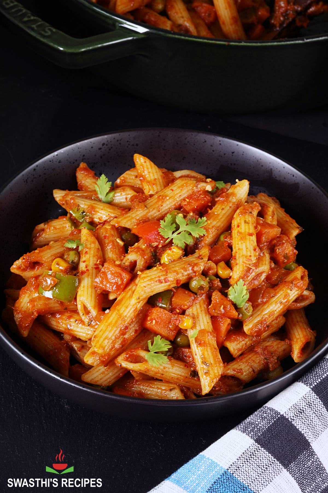

Masala Pasta Recipe (Indian Style Pasta)

About Masala Pasta
Masala Pasta is an Indian-Italian fusion dish that may have originated on the streets of India, selling it as street food.
Not a traditional dish but it has been a favourite & made in almost every indian home, especially with kids.
Ingredients
for cooking pasta:
- 2 litre water
- 1 tbsp salt
- 2 cup pasta
for pasta sauce:
- 2 tbsp olive oil
- 1 tbsp butter
- 2 clove garlic (finely chopped)
- 1 chilli (slit)
- 1 inch ginger (chopped)
- ½ onion (finely chopped)
- 1 tsp chilli powder
½ tsp turmeric
- ½ tsp turmeric
- 2 cup tomato puree
- ½ tsp coriander powder
- ½ tsp cumin powder
- ½ tsp garam masala
- ½ tsp salt
- 2 tbsp sweet corn
- 2 tbsp carrot (chopped)
- 2 tbsp capsicum (chopped)
- ½ cup pasta boiled water
- 2 tbsp tomato sauce
- 1 tsp mixed herbs
- 1 tsp chilli flakes
- ½ cup cheese (grated)
- 2 tbsp coriander (finely chopped)
Steps
- firstly, in a large vessel take 2 litre water and 1 tbsp salt.
- get the water to a rolling boil. once the water comes to a boil, add 2 cup pasta.
- boil for 7 minutes or until the pasta is al dente. make sure to check the cooking time on package instructions.
- drain off the pasta and rinse with cold water to stop from cooking further. keep aside.
- to prepare pasta sauce, in a large wok heat 2 tbsp olive oil and 1 tbsp butter.
- add 2 clove garlic, 1 chilli and 1 inch ginger. saute slightly.
- also, saute ½ onion until the onions shrink slightly.
- keeping the flame on low, add 1 tsp chilli powder and ½ tsp turmeric.
- saute on low flame until the spices turn aromatic.
- further, add 2 cup tomato puree and cook well.
- cook until the mixture thickens and oil separates.
- also add ½ tsp coriander powder, ½ tsp cumin powder, ½ tsp garam masala and ½ tsp salt.
- saute on low flame until the spices turn aromatic.
- add 2 tbsp sweet corn, 2 tbsp carrot and 2 tbsp capsicum. cook for a minute.
- now add ½ cup pasta boiled water, 2 tbsp tomato sauce, 1 tsp mixed herbs and 1 tsp chilli flakes.
- cook until the spices are well combined.
- further, add ½ cup cheese and mix well. cheesy pasta sauce is ready.
- now add boiled pasta and mix well making sure the pasta sauce is well combined with pasta.
- finally, enjoy desi masala pasta topped with cheese and coriander.